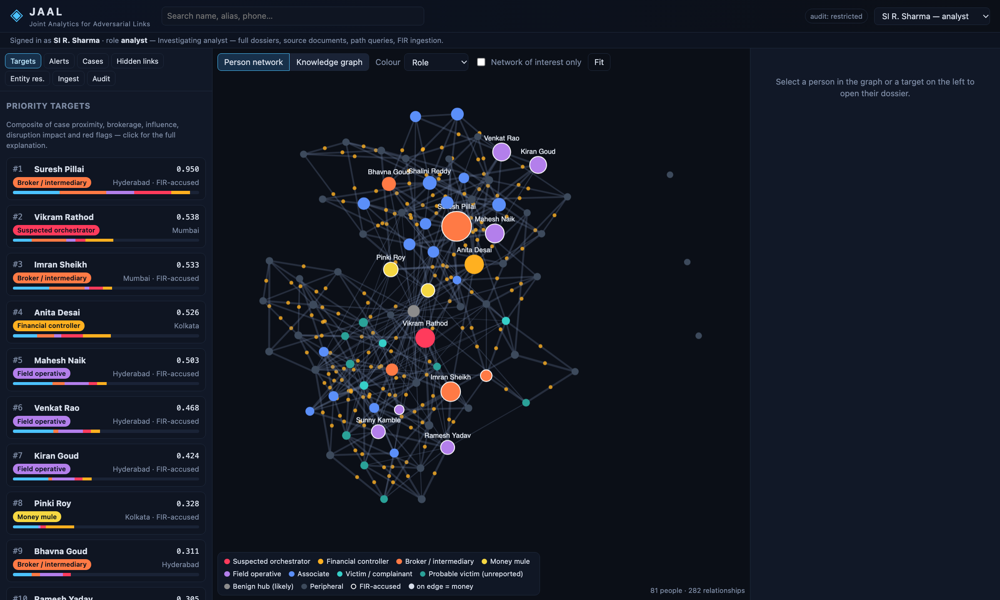
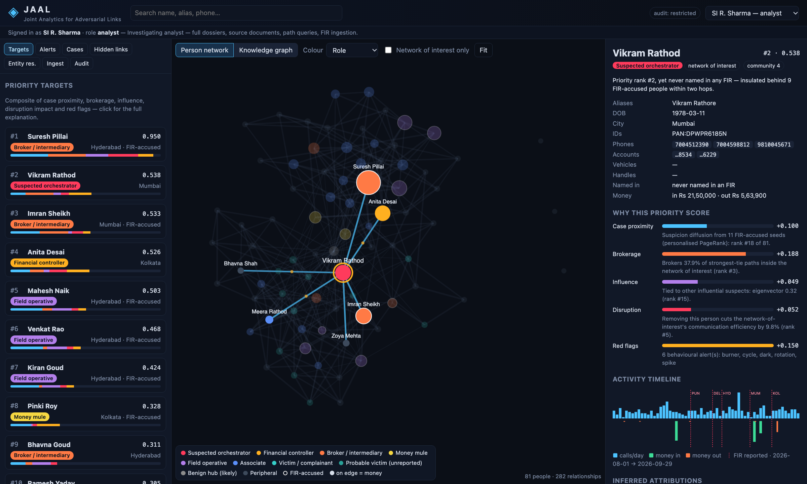
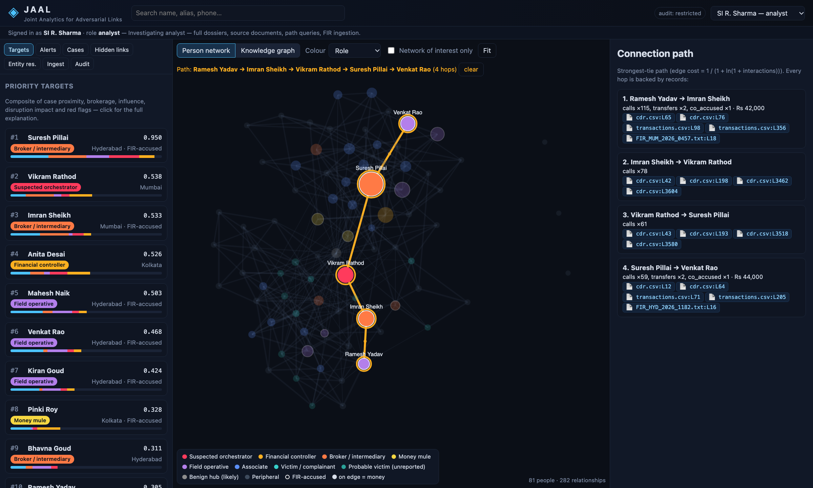
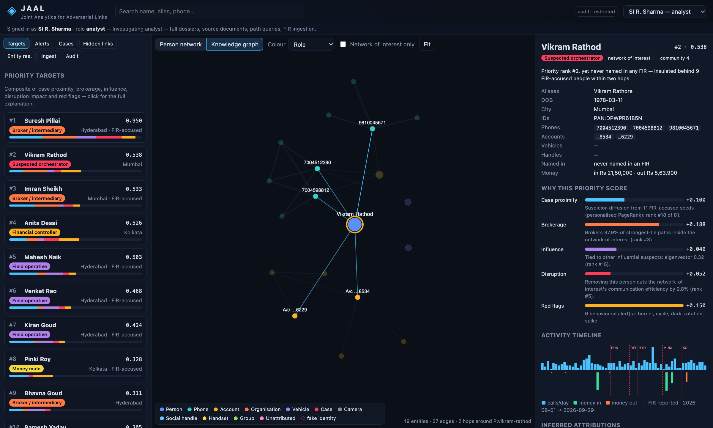
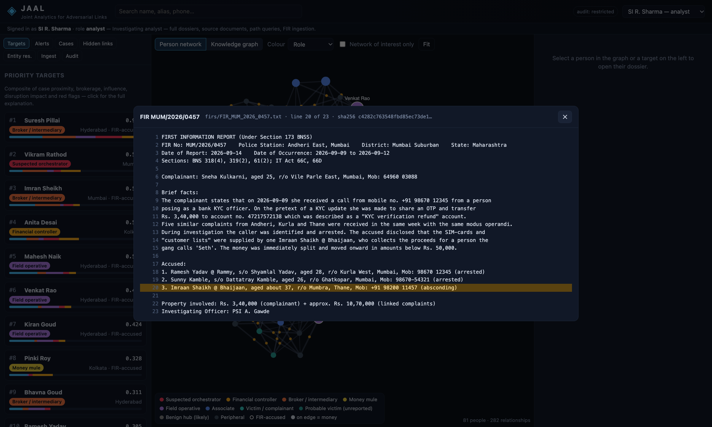
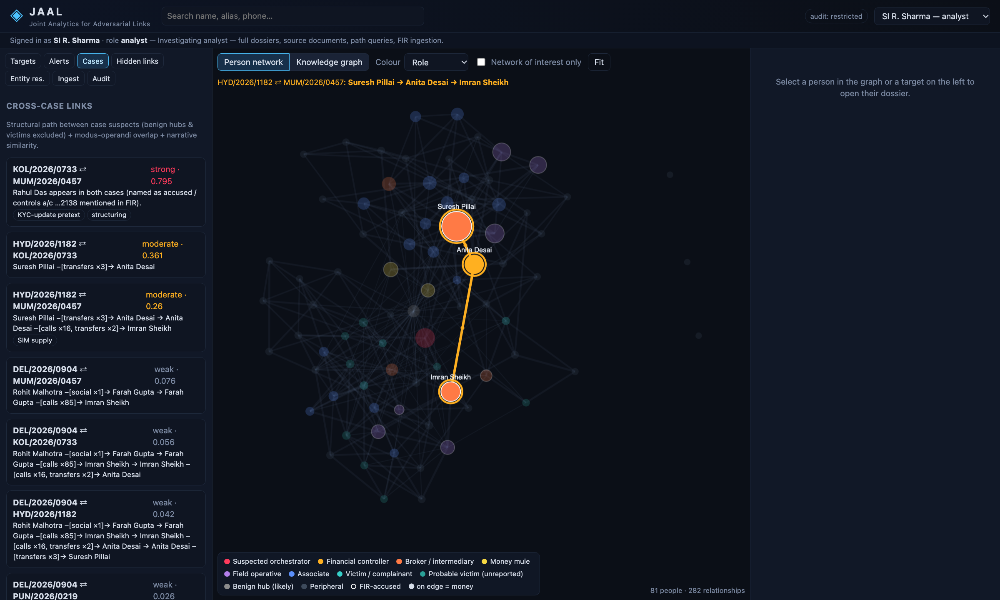
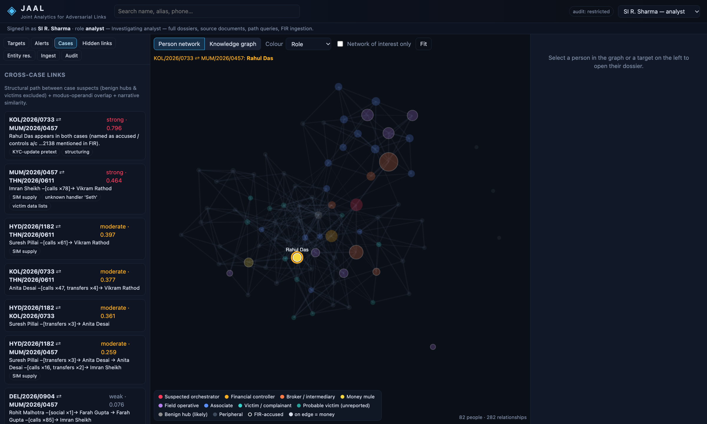
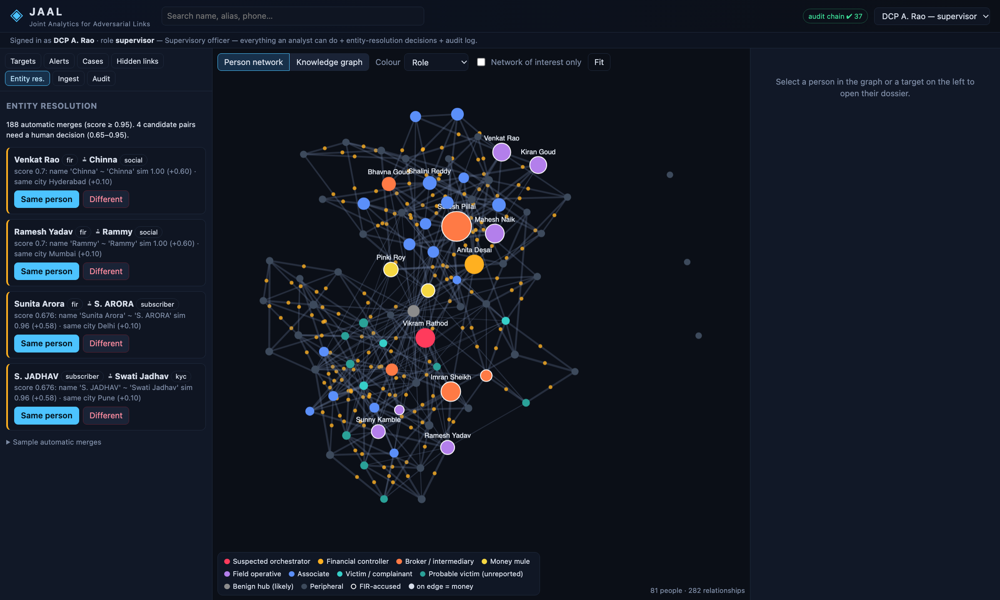
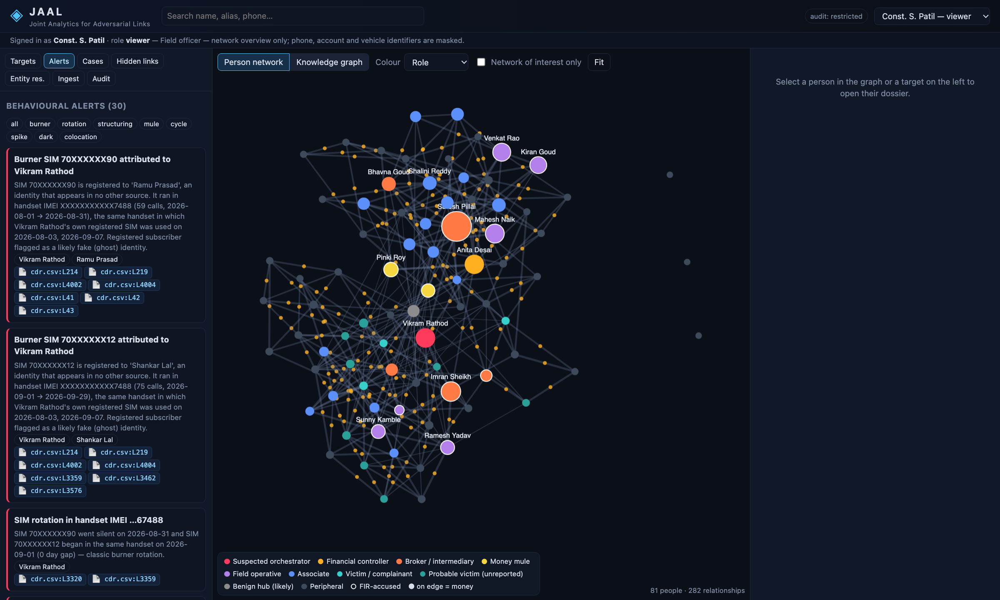
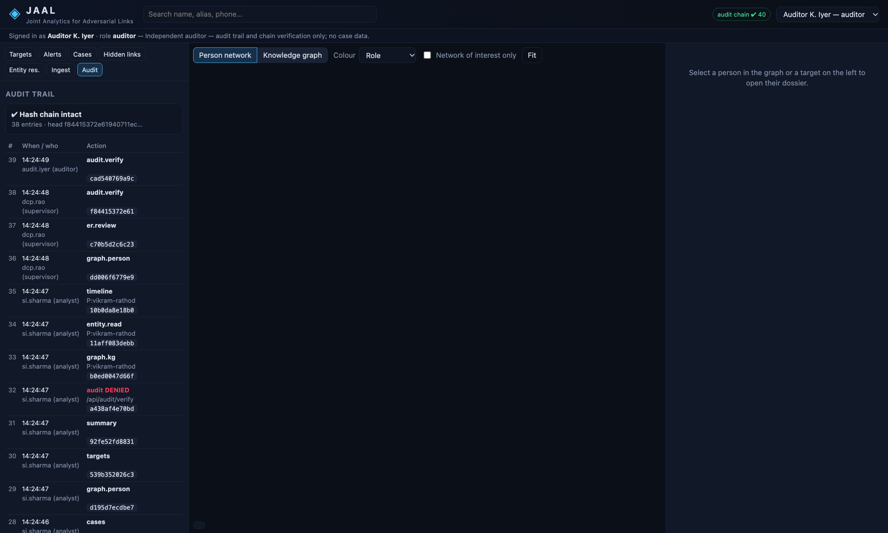

Criminal syndicates are built to resist investigation. They use burner phones registered to fake identities, move money through mules and shell companies in amounts just below reporting thresholds, and keep the leader out of every FIR. The evidence that would expose them does exist, but it is split across FIRs in different states, telecom CDRs, bank statements, RTO and ANPR logs, and social media. Investigators cross-reference these by hand, so indirect links get missed and the leader rarely surfaces.
JAAL ingests all of these sources, works out which records describe the same real person, builds a single knowledge graph, and runs graph algorithms and behavioural detectors on it. It then gives the investigator three things:
Every number, link and alert can be clicked through to the exact line of the source document that supports it. Every access is written to a tamper-evident audit log.
| Typical approach | JAAL's approach |
|---|---|
| Rank suspects by degree (number of contacts). | Degree rewards busy people, not important ones. In our data a delivery agent has the most contacts in the city. JAAL measures structure around the case: personalised PageRank from FIR-accused "seeds" defines a network of interest, and brokerage, influence and disruption are measured inside it. The kingpin moves from rank #42 (degree) to #2. |
| Phone = person, as registered. | Handset forensics. When a SIM registered to an identity that appears in no other source runs in the same handset (IMEI) as a known person's SIM, JAAL flags the registration as a probable fake identity and attributes the burner to the real user. It shows the CDR lines where the person slipped and put their own SIM in the burner handset. |
| Black-box "risk score". | The score is the sum of five named parts with fixed, published weights. Each part has a one-line plain-language explanation and a rank, and each relationship links to its source rows. |
| Treat every contact as suspicious. | Built-in false-positive controls: "benign hub" detection (many weak, mutually unconnected ties) and "probable unreported victim" detection (paid one accused once after a few calls). These are kept out of the suspect network and out of cross-case paths, so a shared courier or a shared victim does not merge two unrelated cases. |
| Fully automatic record merging. | A human-in-the-loop entity-resolution queue. Confident merges (score ≥ 0.95) are automatic. Borderline pairs (0.65–0.95) wait for a supervisor's decision, which is stored and replayed on every rebuild. |
| Logs as plain text files. | A SHA-256 hash-chained audit log. Editing or deleting any past entry is detected and pinpointed. Each source file's SHA-256 is recorded at ingestion as a chain-of-custody manifest. |
| Heavy stack (Neo4j, Spark, cloud ML). | Zero dependencies. All algorithms (Brandes betweenness, weighted Dijkstra-Brandes, power-iteration eigenvector, personalised PageRank, Louvain, Adamic–Adar, Latora–Marchiori efficiency, bounded cycle search, Jaro–Winkler) are implemented from first principles. The system runs on a single police-station laptop with no internet, and an expert witness can reproduce every number. |
Figure 1. Processing pipeline. A full rebuild (ingestion through analytics) takes about 0.5 s for the demo data on a laptop, so every new FIR or review decision triggers a complete, consistent re-analysis instead of an incremental patch.
| Module | File | Responsibility |
|---|---|---|
| Data generator | jaal/datagen.py | Seeded synthetic multi-source dataset with a planted syndicate, decoys, namesakes and messy formats; writes hidden ground truth for evaluation only. |
| Ingestion | jaal/ingest.py | Parsers for FIR free text, CSVs and JSON; phone/vehicle normalisation; every record carries (doc, line, snippet) provenance; SHA-256 manifest. |
| Entity resolution | jaal/resolve.py | Transliteration folding, Jaro–Winkler, evidence-weighted pair scoring, union-find, review queue. |
| Algorithms | jaal/algorithms.py | All graph algorithms, dependency-free. |
| Engine | jaal/engine.py | Knowledge graph, burner inference, person projection, scoring, roles, alerts, cross-case, link prediction, key-player set, evaluation. |
| Audit & RBAC | jaal/audit.py | Hash-chained log, verification, 4 roles, PII masking. |
| Server | jaal/server.py | Threaded HTTP JSON API + static UI; permission check and audit entry on every request. |
| Interface | web/* | Single-page app with its own canvas force-directed graph renderer (no CDN, works offline). |
Real investigative data cannot be published, and a demo is only convincing if the right answer is hidden and can be checked. JAAL therefore ships a seeded generator that plants a 12-person inter-state syndicate among 66 civilians over a 60-day window (1 Aug – 29 Sep 2026), then writes the data the way real agencies would hold it: split across systems, with inconsistent names and number formats.
| Role (hidden truth) | Person | How they appear in the data |
|---|---|---|
| Kingpin | Vikram Rathod (Mumbai) | In no FIR. Talks to his lieutenants and financier only through two burner SIMs registered to fake identities ("Ramu Prasad", "Shankar Lal"), rotated on 1 Sep in the same handset. Twice put his own SIM into that handset. Receives "consultancy fees" from a shell company and has a second account under the spelling "Rathore". |
| Lieutenants | Imran Sheikh (Mumbai), Suresh Pillai (Hyderabad) | Absconding in FIRs as "Imraan Shaikh @ Bhaijaan" and "Suresh Pilai"; each runs a city cell; never call each other directly. |
| Financier | Anita Desai (Kolkata) | Signatory of shell firms "Desai Trading Co" and "Anaya Exports Pvt Ltd"; layering and round-tripping. |
| Mules | Rahul Das, Pinky Roy, Abdul Karim | Receive victims' money and forward it in Rs 45,000–49,900 chunks. |
| Operatives / courier | Ramesh Yadav, Sunny Kamble, Venkat Rao, Kiran Goud, Mahesh Naik | KYC-fraud callers (Mumbai); ganja seizure (Hyderabad); courier van co-located with the lieutenant's car at a highway toll at 2–3 a.m. |
Built-in traps: a delivery agent who calls 32 people (the highest degree in the dataset); two different people named "Amit Kumar"; a wife sharing the kingpin's surname; nine victims who paid mule accounts but never filed complaints; two FIRs (Pune theft, Delhi assault) that have nothing to do with the syndicate; and 35% of civilians registered under initials ("R. MORE").
| Source | Volume | Source | Volume |
|---|---|---|---|
| FIRs (free text) | 5 (MUM, HYD, KOL, PUN, DEL) | Call Detail Records | 6,342 calls |
| Subscriber registry | 80 SIMs | Bank KYC | 81 accounts (2 companies) |
| Fund transfers | 460 | RTO + ANPR | 17 vehicles, 284 camera hits |
| Social media | 16 handles, 85 messages | Person records (all sources) | 208 → 82 entities |
Each parser turns one source into typed records and keeps exact provenance: document id, line number and the original text. That provenance is carried into every graph edge, alert and score, so nothing JAAL shows is detached from its evidence.
@/alias), age, residence, phone and status (arrested / absconding / bailed). Phones, account numbers (a/c, account no.) and vehicle registrations (AP 28 CX 9911) are extracted from anywhere in the narrative. A modus-operandi lexicon tags each case (KYC-update pretext, OTP harvesting, structuring, narcotics, account renting, …).+91 98200 11457, 09820011457, 919820011457 and 98200-11457 all become 9820011457. Vehicle numbers are reduced to alphanumerics.The same man appears as Imran Sheikh (telecom), Md. Imran Sheikh (bank), Imran Shaikh (RTO), Imraan Shaikh @ Bhaijaan (FIR) and Imran S. (social). JAAL resolves these in three steps.
Honorifics are stripped (Md, Mohd, Shri, Smt, …). Common transliteration variants are folded (aa→a, ee→i, ai→e, ei→e, sh→s, kh→k, th→t, w→v, z→j, y→i, doubled letters collapsed, trailing e dropped). Similarity is 0.4·JW(first) + 0.6·JW(last), where JW is Jaro–Winkler and an initial matches the full name (R. ≈ Ritu). "Shaikh"/"Sheikh", "Pilai"/"Pillai" and "Rathod"/"Rathore" therefore score highly. Single-token aliases ("Rammy", "Chinna") are compared against every token.
| Evidence | Weight | Evidence | Weight |
|---|---|---|---|
| Same government ID (PAN/Aadhaar, unmasked) | +1.00 | Shared phone number | +0.45 |
| Same DOB / conflicting DOB | +0.35 / −0.50 | Age consistent / age conflict (>5 yrs) | +0.10 / −0.40 |
| Name similarity | +0.60 × sim | Same city | +0.10 |
Every merge stores its reasons, for example "shared phone 9820011457 (+0.45) · name 'Imraan Shaikh' ~ 'IMRAN SHEIKH' sim 0.97 (+0.58) · age consistent (+0.10)". These reasons are shown in the dossier. Namesakes stay apart: the two "Amit Kumar" records score 0.6 + city mismatch, so they are not merged. Telecom registry rows are never merged directly with each other, because one SIM is one row.
Borderline pairs, such as FIR alias "Rammy" vs. social handle "Rammy" (0.70) or "S. ARORA" vs. "Sunita Arora" (0.88), go to a queue with one entry per pair of resulting entities. Supervisors accept or reject a pair. The decision is persisted to er_decisions.json, logged in the audit trail, and replayed on every rebuild.
Result: 208 person records → 82 entities (78 real people). Pairwise precision 1.000, recall 0.936, F1 0.967. JAAL never wrongly merged two different people. The missed merges are exactly the borderline pairs it sent to human review.
The resolved data becomes one typed property graph: 295 nodes, 877 edges.
| Node types (11) | Person · Phone · Account · Organisation · Vehicle · Case · Camera location · Social handle · Handset (IMEI) · Social group · Unattributed phone |
|---|---|
| Edge types (16) | REGISTERED_TO · USES · INFERRED_USER · USED_IN (SIM↔IMEI) · CALLED · HOLDS · CONTROLS (person→company) · TRANSFERRED · OWNS · SEEN_AT · CO_LOCATED · OPERATES · MESSAGED · POSTED_IN · NAMED_IN (role, status) · MENTIONS (case→artefact) |
Each aggregated edge keeps its interaction count, totals (call seconds, rupees), first and last timestamps, and up to 25 evidence rows.
For every handset IMEI used by more than one SIM, JAAL checks the registered owners. If exactly one owner is a "real" identity (seen in more than one source) and another is a single-source identity (seen only in the telecom registry), the second is flagged as a probable fake and its SIM is attributed to the real person with confidence 0.85. The explanation cites the CDR lines where the person's own SIM ran in the burner handset. In the demo, both of the kingpin's burners are attributed correctly, and a SIM-rotation alert is raised: one SIM went silent on 31 Aug and the next started in the same handset on 1 Sep.
For analysis, the graph is projected onto people: two people are linked if their phones called each other, their accounts (including companies they control) exchanged money, their vehicles were co-located, their handles messaged or posted in the same group, or they were co-accused in an FIR. Edge weight = calls + 3×transfers + 5×co-locations + messages + 4×co-accused. Each person-to-person edge records which channels support it and links back to the knowledge-graph edges and their source rows. Result: 81 people, 282 relationships, 8 Louvain communities (modularity 0.69).
Centrality computed over a whole city's call graph mostly finds popular civilians. JAAL first asks "who is close to the case?" by running personalised PageRank with teleportation restricted to the 11 FIR-accused people ("suspicion diffusion"). Before ranking, two kinds of people are removed:
The NOI is the accused plus the top 30 by PageRank. It is then expanded by alerts: anyone with a severity-3 financial or telecom alert joins. In the demo this brings in the third mule, Abdul Karim, through his structuring alert.
1/(1+ln(1+w)), so brokering strong, frequent ties counts more than incidental contact.The dossier shows each term as a bar with its rank and a sentence, for example: "Brokers 37.9% of strongest-tie paths inside the network of interest (rank #3)".
| Role | Rule |
|---|---|
| Victim / complainant | Named only as complainant. |
| Probable victim (unreported) | Victim pattern from 8.1. |
| Financial controller | Controls a company account and moves ≥ Rs 5 lakh. |
| Suspected orchestrator | Priority rank ≤ 5, never named as accused, yet ≥ 3 accused within two hops ("insulated" leadership). |
| Money mule | ≥ Rs 2 lakh in from ≥ 2 sources, ≥ 60% forwarded. |
| Broker / intermediary | Brokerage rank ≤ 8 and neighbours in ≥ 2 communities. |
| Field operative / Associate / Benign hub / Peripheral | Accused; in NOI; hub pattern; otherwise. |
A greedy search picks the three people whose joint removal most reduces the network's efficiency. This is a disruption plan, not just a list: removing Suresh Pillai, Anita Desai and Farah Gupta leaves 53% efficiency and splits the network into 5 fragments.
| Detector | Method | Found in demo |
|---|---|---|
| Burner / ghost identity | Shared IMEI + single-source subscriber (7.1) | 2 burners → Vikram Rathod |
| SIM rotation | Heavy SIM stops, another starts in the same handset within 3 days | 31 Aug → 1 Sep |
| Structuring | ≥ 3 transfers of Rs 45,000–49,999 from one account | All 3 mules |
| Pass-through account | ≥ Rs 2 lakh in from ≥ 2 sources, ≥ 70% out within 48 h | Mule + shell company |
| Round-tripping | Bounded DFS for directed cycles (legs ≥ Rs 40k) | Desai Trading → Anaya Exports → Rathod → Desai Trading |
| Communication spike | Robust z-score (median/MAD) on daily calls; severity raised if it precedes a case linked to the person's circle within 6 days | All 3 cells spike 2 days before their incidents |
| Going dark | Active phone (≥ 2 calls/day, ≥ 15 days) silent ≥ 5 days before data end | Arrested operatives; retired burner |
| Co-location | Two vehicles at the same ANPR camera within 10 min, ≥ 2 times | Courier van + lieutenant's car, Kurnool toll, 2–3 a.m. |
For each pair of FIRs, JAAL collects each case's people: accused, plus owners of phones, accounts and vehicles the FIR mentions (excluding complainants). It then scores the link from three signals:
Paths may not pass through benign hubs or victims, and one-off ties (a single social message) are discounted. Results for the 5 base FIRs:
| Case pair | Strength | Why (as shown to the analyst) |
|---|---|---|
| KOL/0733 ⇄ MUM/0457 | strong 0.80 | Rahul Das appears in both: accused in Kolkata, and controls the account the Mumbai victim paid into. |
| HYD/1182 ⇄ KOL/0733 | moderate 0.36 | Suresh Pillai ← transfers ×3 ← Anita Desai (who controls the shells named in the Kolkata FIR). |
| HYD/1182 ⇄ MUM/0457 | moderate 0.26 | Suresh Pillai → Anita Desai → Imran Sheikh. |
| All 7 pairs involving PUN/0219 or DEL/0904 | weak ≤ 0.08 | Only long civilian chains or single social messages connect them, so they are correctly left unlinked. |
Hidden-link prediction. Adamic–Adar scoring inside the NOI suggests pairs with no direct record but many shared, rarely-shared contacts (for example "Imran Sheikh ⋯ Nisha Pawar: 3 shared contacts"). These are offered as leads for CDR or bank requisitions, not as facts.
(doc, line, text). Every graph edge keeps its evidence rows. Every person-to-person link keeps the graph edges behind it. Every alert carries evidence. In the UI, each 📄 chip opens the original file at the exact line, highlighted, with the file's SHA-256. A test checks that no person-to-person link is missing its evidence.{seq, ts, user, role, action, target, outcome, prev_hash} and its SHA-256. verify() recomputes the chain and reports the first broken entry. The test suite edits entry #3 and confirms it is caught.| Role | Can | Cannot |
|---|---|---|
| Viewer (field officer) | Network, targets, alerts, cases | Dossiers, documents. Phone, account, vehicle and IMEI identifiers are masked (70XXXXXX90); node ids become opaque stable tokens. |
| Analyst | Everything above + dossiers, documents, path finder, FIR ingest, ER queue (read) | Decide ER pairs, read audit |
| Supervisor | Everything + ER decisions, audit log, evaluation | — |
| Auditor | Audit trail, chain verification, data manifest | Any case data |
Permissions are enforced on the server for every endpoint, not just hidden in the UI. Demo identities use tokens; in deployment these would come from the agency's SSO.

Figure 2. Main workspace: priority targets with role and score breakdown (left), the person network coloured by inferred role with node size = priority and dots on edges = money (centre). The hidden kingpin (red, centre) bridges the Mumbai cell (bottom) and the Hyderabad cell (top).

Figure 3. Dossier for Vikram Rathod: "Suspected orchestrator — never named in any FIR, insulated behind 9 FIR-accused people within two hops". All three phones, including both burners, are attributed to him. Every score term is explained, and the timeline overlays calls and money with FIR dates.

Figure 4. Path finder: a Mumbai field operative connects to a Hyderabad one only through Imran Sheikh → Vikram Rathod → Suresh Pillai. Every hop lists its channels and the CDR, transaction or FIR lines behind it.
Figure 5. Behavioural alerts: burner attribution with the exact CDR rows, SIM rotation, structuring, pass-through accounts, round-tripping, spikes, phones going dark and co-location.

Figure 6. Knowledge-graph view two hops around the kingpin: his registered phone, the two burners (cyan) attributed through the shared handset, and two accounts.

Figure 7. Evidence viewer: clicking any 📄 chip opens the source document at the exact line, highlighted, with the file's SHA-256 for chain of custody.

Figure 8. Cross-case linkage: the Hyderabad narcotics case and the Mumbai cyber-fraud case are linked through the lieutenant and the financier, with shared modus-operandi tags. The Pune and Delhi cases stay weak.

Figure 9. After ingesting a new FIR (Thane courier arrest naming only a handler called 'Seth' on phone 70045 98812), JAAL immediately links the new case strongly to Mumbai and moderately to Hyderabad and Kolkata. The number is one of Vikram Rathod's attributed burners, so the new FIR's 'Seth' is the kingpin.

Figure 10. Entity-resolution review (supervisor): borderline pairs with the full scoring reasons and Same person / Different buttons; decisions are persisted and audited.

Figure 11. Viewer role: identifiers masked, dossiers and documents denied.

Figure 12. Auditor role: hash-chain verification and full access log, including denied attempts.
The generator writes ground_truth.json, which the engine never reads. python3 run.py --evaluate compares JAAL's output with it. The baselines are what a spreadsheet-based analyst would typically do: sort by number of contacts, or compute plain betweenness on the whole graph.
| Metric | JAAL | Baseline |
|---|---|---|
| Rank of hidden kingpin (never in any FIR) | #2 of 81 | #42 by degree |
| Syndicate members in top 12 (precision@12) | 10 / 12 = 0.83 | 2 / 12 = 0.17 by degree |
| Rank of decoy delivery agent | #19 (flagged benign hub) | #1 by degree |
| Burner SIMs attributed to the right person | 2 / 2 | 0 (registered to fake names) |
| Cross-case pairs correctly linked or separated | 10 / 10 | — |
| Entity resolution (pairwise) | P 1.000 · R 0.936 · F1 0.967 | — |
| Roles: kingpin / financier / mules | Orchestrator / Financial controller / Money mule (2 of 3) | — |
| Full rebuild time | ≈ 0.5 s | weeks by hand |
| Requirement | How JAAL meets it |
|---|---|
| Multi-source ingestion & entity resolution | 8 source types including unstructured FIR text; transliteration-aware fuzzy ER with explained scores, union-find, human review queue; burner / fake-identity resolution through handsets (§5–6, §7.1). |
| Automated knowledge-graph construction | 295-node, 877-edge typed graph with 11 node and 16 edge types, plus person projection; interactive graph explorer with knowledge-graph drill-down (§7, §12). |
| Centrality & role detection | Betweenness (weighted Brandes), eigenvector, personalised PageRank, disruption impact (efficiency loss), key-player set; 10 explained roles including insulated orchestrator, financial controller and mule (§8). |
| Cross-case & temporal patterns | Path + modus-operandi + TF-IDF case linkage with false-link controls; spikes before incidents, going dark, SIM rotation, structuring, round-tripping, co-location; live FIR ingestion re-links cases (§9–10). |
| Explainable AI & audit trails, RBAC | Decomposed scores, rule-stated roles, line-level evidence for every link and alert, SHA-256 manifest, hash-chained audit with verification, 4 server-enforced roles with PII masking (§11). |
| Expected impact: weeks → minutes | Full re-analysis in about 0.5 s; the hidden kingpin, both burners, all mules and the inter-state links surface without manual cross-referencing. |
cd jaal python3 run.py # generates the demo data on first run, serves http://127.0.0.1:8765 python3 run.py --evaluate # scores JAAL against the hidden ground truth python3 run.py --regen # regenerate the synthetic dataset python3 -m unittest discover -s tests -v # 18 tests
Requirements: Python ≥ 3.9 and a modern browser. No pip installs and no internet access needed. Switch users with the selector at the top right to see role-based access: Const. Patil (viewer), SI Sharma (analyst), DCP Rao (supervisor), Auditor Iyer. Try Ingest → Load sample FIR → Ingest & re-analyse to watch a new case attach to the network.
jaal/ ├── run.py entry point (serve / evaluate / regen) ├── jaal/ │ ├── datagen.py synthetic "Operation Monsoon" generator + ground truth │ ├── ingest.py parsers, normalisers, FIR NER, provenance, SHA-256 manifest │ ├── resolve.py entity resolution + review queue │ ├── algorithms.py Brandes, PageRank/PPR, eigenvector, Louvain, efficiency, Adamic–Adar, cycles │ ├── engine.py knowledge graph, analytics, alerts, roles, cross-case, evaluation │ ├── audit.py hash-chained audit log, RBAC roles, PII masking │ └── server.py HTTP JSON API + static files ├── web/ index.html · style.css · app.js (own canvas graph engine) ├── tests/test_core.py algorithm, ER, audit-tamper, masking and end-to-end tests ├── data/raw/ generated sources (FIRs, CSVs, JSON, ground_truth.json) ├── data/state/ audit.jsonl, er_decisions.json (created at runtime) └── docs/ this report, screenshots, evaluation.json
API (all JSON, token in the X-JAAL-Token header): /api/summary · /api/graph · /api/kg?focus= · /api/targets · /api/alerts · /api/cases · /api/links · /api/entity/{id} · /api/timeline/{id} · /api/path?a=&b= · /api/doc/{doc} · /api/search?q= · /api/er/review · POST /api/er/decide · POST /api/ingest/fir · /api/audit · /api/audit/verify · /api/evaluate.
All names, phone numbers, accounts, vehicles and cases in this report are fictional and machine-generated.